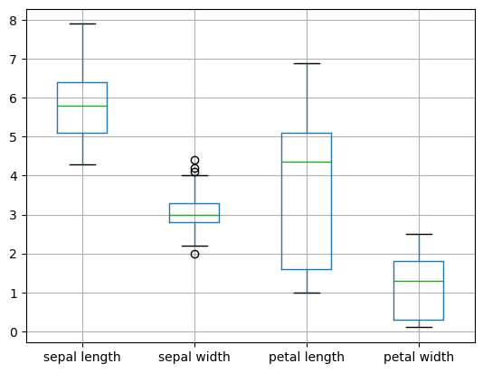
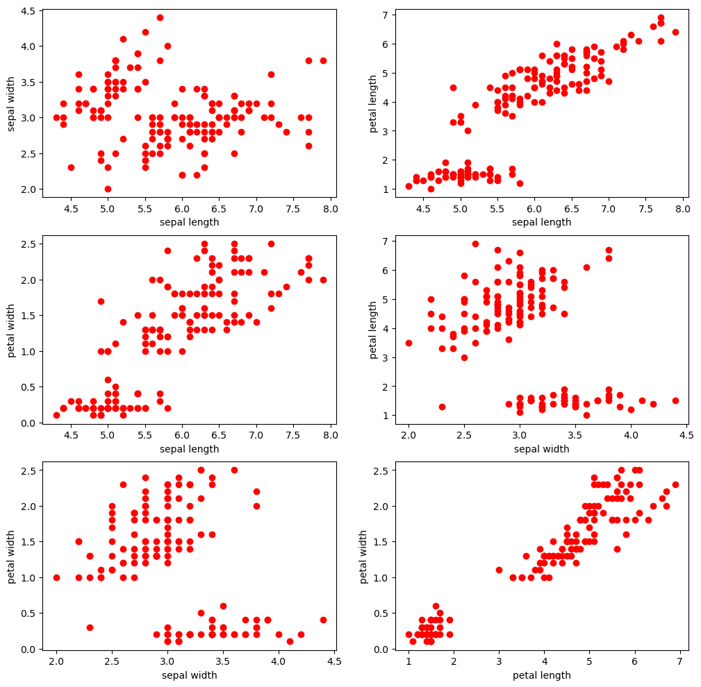
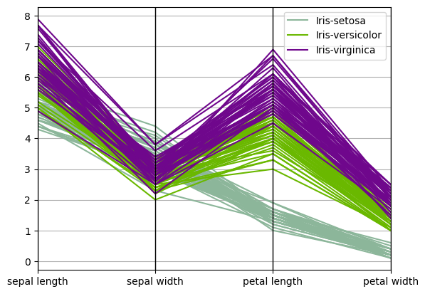

The following tutorial contains examples of Python code for data exploration. You should refer to the “Data Exploration” chapter of the “Introduction to Data Mining” book (available at https://www-users.cs.umn.edu/~kumar001/dmbook/index.php) to understand some of the concepts introduced in this tutorial notebook. The notebook can be downloaded from http://www.cse.msu.edu/~ptan/dmbook/tutorials/tutorial3/tutorial3.ipynb.
Data exploration refers to the preliminary investigation of data in order to better understand its specific characteristics. There are two key motivations for data exploration: 1. To help users select the appropriate preprocessing and data analysis technique used. 2. To make use of humans’ abilities to recognize patterns in the data.
Read the step-by-step instructions below carefully. To execute the code, click on the cell and press the SHIFT-ENTER keys simultaneously.
3.1. Summary Statistics
Summary statistics are quantities, such as the mean and standard deviation, that capture various characteristics of a potentially large set of values with a single number or a small set of numbers. In this tutorial, we will use the Iris sample data, which contains information on 150 Iris flowers, 50 each from one of three Iris species: Setosa, Versicolour, and Virginica. Each flower is characterized by five attributes:
sepal length in centimeters
sepal width in centimeters
petal length in centimeters
petal width in centimeters
class (Setosa, Versicolour, Virginica)
In this tutorial, you will learn how to:
Load a CSV data file into a Pandas DataFrame object.
Compute various summary statistics from the DataFrame.
To execute the sample program shown here, make sure you have installed the Pandas library (see Module 2).
1. First, you need to download the Iris dataset from the UCI machine learning repository.
Code: The following code uses Pandas to read the CSV file and store them in a DataFrame object named data. Next, it will display the first five rows of the data frame.
2. For each quantitative attribute, calculate its average, standard deviation, minimum, and maximum values.
Code:
from pandas.api.types import is_numeric_dtypefor col in data.columns:if is_numeric_dtype(data[col]):print('%s:'% (col))print('\t Mean = %.2f'% data[col].mean())print('\t Standard deviation = %.2f'% data[col].std())print('\t Minimum = %.2f'% data[col].min())print('\t Maximum = %.2f'% data[col].max())
sepal length:
Mean = 5.84
Standard deviation = 0.83
Minimum = 4.30
Maximum = 7.90
sepal width:
Mean = 3.05
Standard deviation = 0.43
Minimum = 2.00
Maximum = 4.40
petal length:
Mean = 3.76
Standard deviation = 1.76
Minimum = 1.00
Maximum = 6.90
petal width:
Mean = 1.20
Standard deviation = 0.76
Minimum = 0.10
Maximum = 2.50
3. For the qualitative attribute (class), count the frequency for each of its distinct values.
4. It is also possible to display the summary for all the attributes simultaneously in a table using the describe() function. If an attribute is quantitative, it will display its mean, standard deviation and various quantiles (including minimum, median, and maximum) values. If an attribute is qualitative, it will display its number of unique values and the top (most frequent) values.
Code:
data.describe(include='all')
sepal length
sepal width
petal length
petal width
class
count
150.000000
150.000000
150.000000
150.000000
150
unique
NaN
NaN
NaN
NaN
3
top
NaN
NaN
NaN
NaN
Iris-setosa
freq
NaN
NaN
NaN
NaN
50
mean
5.843333
3.054000
3.758667
1.198667
NaN
std
0.828066
0.433594
1.764420
0.763161
NaN
min
4.300000
2.000000
1.000000
0.100000
NaN
25%
5.100000
2.800000
1.600000
0.300000
NaN
50%
5.800000
3.000000
4.350000
1.300000
NaN
75%
6.400000
3.300000
5.100000
1.800000
NaN
max
7.900000
4.400000
6.900000
2.500000
NaN
Note that count refers to the number of non-missing values for each attribute.
5. For multivariate statistics, you can compute the covariance and correlation between pairs of attributes.
Code:
print('Covariance:')data.cov()
Covariance:
sepal length
sepal width
petal length
petal width
sepal length
0.685694
-0.039268
1.273682
0.516904
sepal width
-0.039268
0.188004
-0.321713
-0.117981
petal length
1.273682
-0.321713
3.113179
1.296387
petal width
0.516904
-0.117981
1.296387
0.582414
print('Correlation:')data.corr()
Correlation:
sepal length
sepal width
petal length
petal width
sepal length
1.000000
-0.109369
0.871754
0.817954
sepal width
-0.109369
1.000000
-0.420516
-0.356544
petal length
0.871754
-0.420516
1.000000
0.962757
petal width
0.817954
-0.356544
0.962757
1.000000
3.2. Data Visualization
Data visualization is the display of information in a graphic or tabular format. Successful visualization requires that the data (information) be converted into a visual format so that the characteristics of the data and the relationships among data items or attributes can be analyzed or reported.
In this tutorial, you will learn how to display the Iris data created in Section 3.1. To execute the sample program shown here, make sure you have installed the matplotlib library package (see Module 0 on how to install Python packages).
1. First, we will display the histogram for the sepal length attribute by discretizing it into 8 separate bins and counting the frequency for each bin.
2. A boxplot can also be used to show the distribution of values for each attribute.
Code:
data.boxplot()
<Axes: >

3. For each pair of attributes, we can use a scatter plot to visualize their joint distribution.
Code:
import matplotlib.pyplot as pltfig, axes = plt.subplots(3, 2, figsize=(12,12))index =0for i inrange(3):for j inrange(i+1,4): ax1 =int(index/2) ax2 = index %2 axes[ax1][ax2].scatter(data[data.columns[i]], data[data.columns[j]], color='red') axes[ax1][ax2].set_xlabel(data.columns[i]) axes[ax1][ax2].set_ylabel(data.columns[j]) index = index +1

4. Parallel coordinates can be used to display all the data points simultaneously. Parallel coordinates have one coordinate axis for each attribute, but the different axes are parallel to one other instead of perpendicular, as is traditional. Furthermore, an object is represented as a line instead of as a point. In the example below, the distribution of values for each class can be identified in a separate color.
Code:
from pandas.plotting import parallel_coordinates%matplotlib inlineparallel_coordinates(data, 'class')
<Axes: >

3.3. Summary
This tutorial presents several examples for data exploration and visualization using the Pandas and matplotlib library packages available in Python.
References:
Documentation on Pandas. https://pandas.pydata.org/
Documentation on matplotlib. https://matplotlib.org/
Lichman, M. (2013). UCI Machine Learning Repository [http://archive.ics.uci.edu/ml]. Irvine, CA: University of California, School of Information and Computer Science.